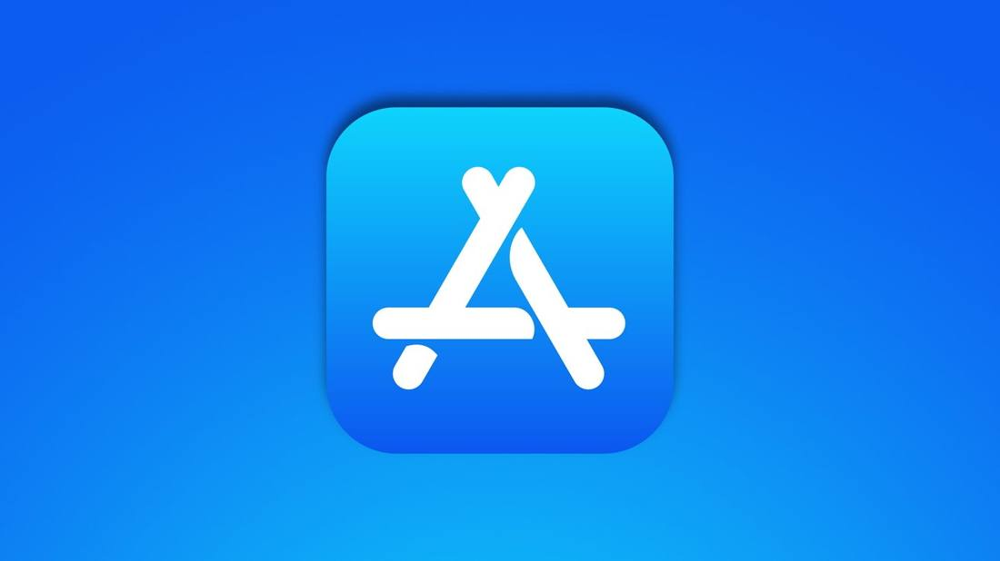

400 Apps Passed Review in Disguise: Photo-Editor Shells, Hidden Deepfake Generators
WIRED's investigation of November 2, 2026 exposed a network of more than 400 disguised apps and domains: posing as photo editors, tutors and other everyday tools to pass review, then using a server-side switch to load a hidden deepfake generation interface. Apple removed 19 apps, Google removed most, and Meta acted against 11,600 advertising accounts.

- 01THE RELEASE — WIRED published its investigation on November 2, 2026, exposing a network of more than 400 disguised apps and domains.
- 02THE CONFIRMATION — AppleInsider and SiliconReport corroborated in independent same-day reports the scale, the switch mechanism and the three platforms' enforcement positions.
- 03THE WATCHPOINT — Whether platforms publish standing detection methods for remote content, and whether regulators clarify app-store responsibility.
WHAT HAPPENEDWhat Happened
WIRED published its investigation on November 2, 2026: a network of more than 400 interrelated apps and domains, disguised as everyday tools such as pet photo editors, language tutors and fitness coaches, passed review on Apple's App Store and Google Play.
The key to the disguise was a server-side switch. After installation, an app first reported the user's language, referral source and a unique identifier to a remote server, which then decided whether to show the normal functionality or load a hidden deepfake generation interface. Ordinary users opening the app directly, and reviewers, saw the normal features; users arriving via specific advertisements saw the hidden interface.
The scale is already material: in September 2026, researchers found 27 related apps on Google Play with combined downloads above 350,000, with DiffAI alone installed more than 100,000 times. Some apps had also been rated as appropriate for all ages.
Tracking leads point to a single operating network: the non-profit research group AI Forensics and the cybersecurity firm Infoblox found that the apps share identical JavaScript configurations and cross-referenced encryption keys, with code and hosting clues in a Chinese-language context, linked to a Hong Kong-registered entity, KeLing Technology Limited. Infoblox mapped nearly 500 associated domains, with registrations traceable to late 2025 and up to 30 new domain-and-app combinations added per week at the peak.
Platform enforcement ran on three tracks. Google had removed most of the named apps before WIRED's inquiry. After WIRED's notification, Apple removed 19 apps, including the pet photo app Viefur, saying the apps complied with the rules when submitted and that developers later changed the content served from remote servers. Meta said it had banned KeLing back in 2025 for ignoring cease-and-desist letters, and in this round acted against 11,600 advertising accounts and about 4,700 business pages, and blocked 209 apps from advertising.
WHY IT MATTERSReview checks the moment of submission; the risk lives on the server side
This incident exposes a structural blind spot in app-store review: review can only see the version a developer submits, while after launch an app can swap content and interfaces from a remote server without resubmission. Apple's October 16 guideline update, explicitly prohibiting hidden features and non-consensual intimate imagery generation, is a patch on the rules side — but rules cannot govern server-side content substitution.
For platforms, the real test has moved from before listing to after it: continuously monitoring the remote behavior of listed apps is costlier and harder than one-time review, yet a network expanding at up to 30 combinations a week shows the listing-review line of defense has already been bypassed.
WHY IT MATTERSAdvertising is the amplifier in this chain
The hidden interface did not appear at random; ad referral was one of its triggers. Researchers tracked thousands of advertisements placed on Meta's platforms directing users to these apps in the stores, and generation credits inside the apps could be bought via Apple Pay and Google Pay.
That means a single chain ran through three links: ad-platform referral, app-store endorsement, and in-app payment settlement. Meta's account bans and ad blocks show enforcement on the advertising side has begun, but as WIRED's report closed, similar promotions and mirror apps were still appearing — cleanup has not yet caught up with replication.
SIGNAL JUDGMENT — ANALYSISA server switch bypassed the app stores' line of defense
Tokenta Signal's judgment: the real signal in this incident is not any single app, but the failure of the review model itself. Listing review inspects a static submission; the risk hides in remote content after launch. Unless platforms bring continuous monitoring up to the same intensity as listing review, similar networks will simply reappear under a new disguise. The next signal is whether Apple and Google publish standing detection methods for remote content substitution, and whether regulators write app-store responsibility for non-consensual deepfakes into their rules.
WHAT REMAINS UNCERTAINWhat Remains Uncertain
EVIDENCEEvidence
WIRED's investigation confirmed by two sources through independent reports from AppleInsider and SiliconReport. Original links opened and verified. WIRED's own site could not be opened directly this round due to fetch-policy limits, so the evidence link uses a report page that was opened and verified.
PRIMARY SOURCESPrimary Sources
- AppleInsider report
https://appleinsider.com/articles/26/11/02/hundreds-of-ai-apps-were-part-of-a-network-hiding-sexually-abusive-deepfake-tools - SiliconReport report
https://www.siliconreport.com/wired-finds-over-400-domains-and-apps-hid-explicit-ai-features